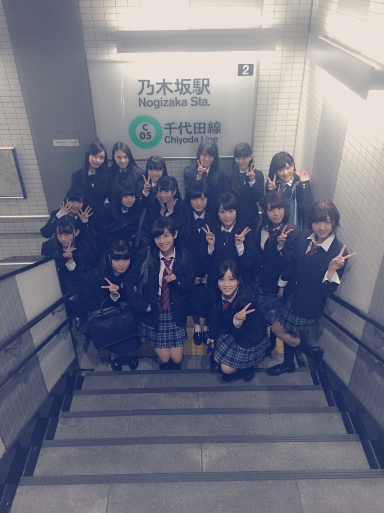
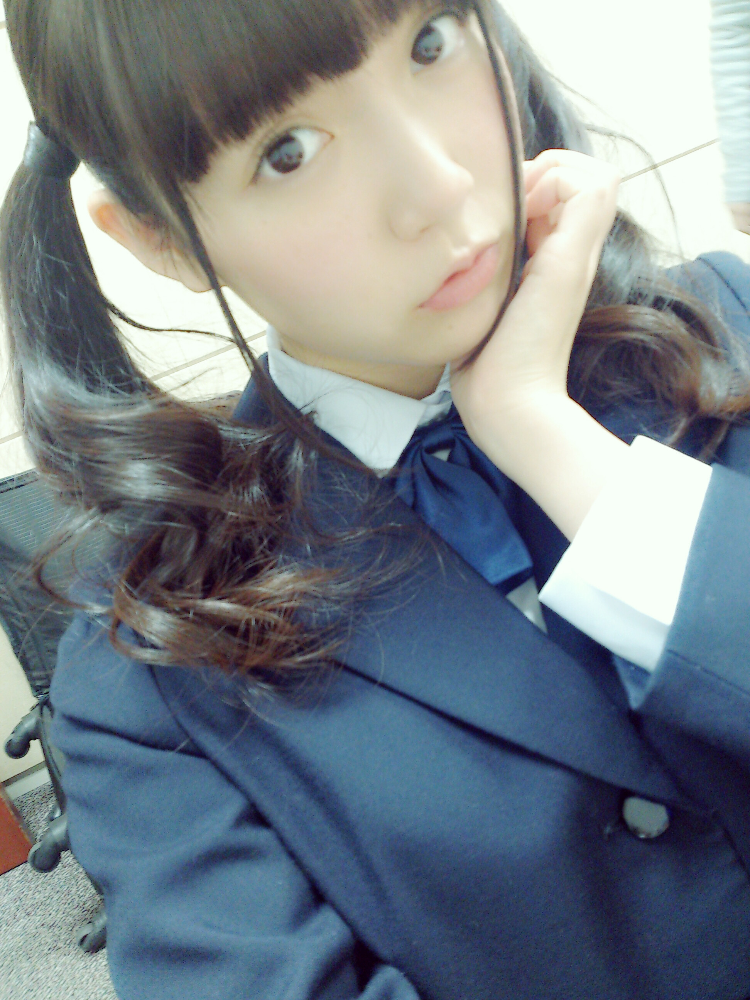
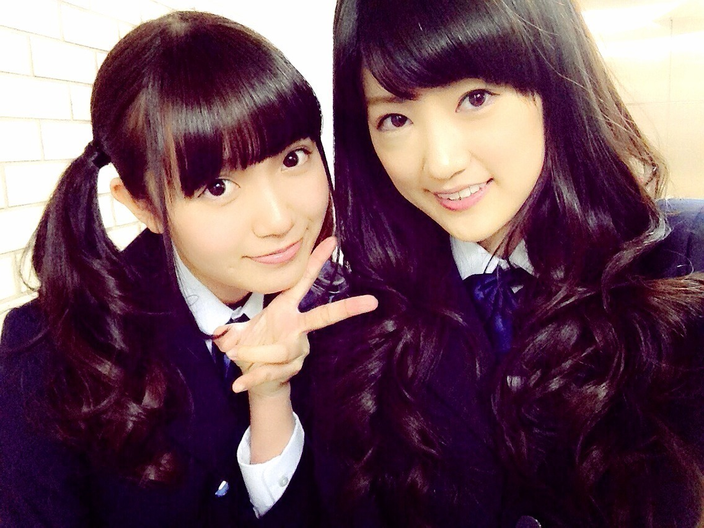

| 2014/12 09 Tue | 中元日芽香 ひめたん-OoO-その504 |

チーム現役！
私はこの中では
一番おねーさんなんだ( ^o^ )♡
お誕生日が早いからね～
私たち高校生はtype-C。

ご無沙汰してますひめたんです～
こんなに更新空いたこと
過去ないよ～わかんないけど( ºωº )
みなさん元気にしてますかー？
ライブまであと少し......なんだけど
毎日覚えることが多くて
頑張ってるよ～
じゃあライブの予習ね(＊＾ω＾＊)
ひめたんのサイリウムカラーは
ぴんく × ぴんく で
お願いします♡
ひめたんうちわ
ひめたんタオル
ひめたんTシャツも
持ってるひとはぜひ見せて～＊
コールは＼ひめたん／だよ！
アンダーライブはいよいよ
ファイナルを迎えるということで
しかも過去最大規模の会場で
たくさんの方が来てくださるので
みんな今から張り切ってます(｀・ω・´)
初参戦のひとは
アンダーライブならではの
一体感と熱気を感じてほしい！
2回目以降だよってひとは
私たちメンバー含め
会場を引っ張っていってほしい！
と言っても今回
初めての企画も用意しているので
新鮮な気持ちで楽しんでいただけると
思います！
アンダーメンバーと研究生だけで
作り上げるライブ。
今年の4月、不安を抱えたまま
始まったこのライブが
今やこんなに大きなものになるなんて
その時は思いもしなかったなあ
アンダーだけで大きなライブをする
なんて当時は考えられなかったもん
あの頃に比べたら私たちも
少しずつ認めてもらえるように
なったのかなあ。
アンダーライブは客席との距離が
近いところがいいよね！と
たくさん言っていただいて
もちろん嬉しかった、けれど
ずっと変わらないんじゃ
進展がないような気がして
私はもっと大きなステージに
立ちたいと思っていました。
だから今回、
素敵な舞台を用意していただいて
本当に嬉しいです( ˇωˇ )
大きな会場でも
客席からステージまでの距離は
変わらず近いまま感じてほしい！
アンダーライブの良さを
大切にしながら、でも
前回のライブよりもさらに良いものを。
アンダーライブ2ndシーズンファイナル
私たちのパフォーマンスも気持ちも
過去最高のものになると信じてます( ^o^ )
みなさんも全力で
楽しんでくださいね☆
クリスマスライブは今年も全員で
大きなステージでやらせていただきます
クリスマスならではの
素敵な演出になっていたり
アレンジをしていたりと
まさに今回しかみられないライブ。
全員でのライブは
全国ツアー以来だからちょっと久しぶり。
リハもにぎやかで楽しくやっています(﹡ƠωƠ﹡)
きっと本番もみんなのパワーで
楽しいライブになると思う！
みなさんが投票してくださった
カップリング曲の結果発表もあります！
ひめたんが参加した曲は
何位にランクインしたんだろう(＊´v`＊)
来てくださるひとは
一緒にドキドキしましょう
お留守番ちーむのひとは
日記で報告するから待っててね～
全部で3日間4公演。
みなさんと素敵な時間が
過ごせますように\❁/

去年に引き続き
今年も日経エンタさんに
乃木坂特集していただきました\( ˆoˆ )/
今年は豪華に
全員分のロングインタビュー！！
みんなの記事を読むの
楽しみなんだー
まだ読んでないんだけどね～
アニスパ終わっちゃう(´；_；｀)うぅ
(＊´・ω・＊)